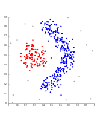

Cluster Analysis
Introduction
Cluster Analysis is a data mining technique where you use algorithms to try to find previously unknown groups in a data set. It is a powerful tool that can help you find patterns in a data set you are already familiar with or to explore a new data set. Below I will discuss three popular clustering algorithms: K-Means, Agglomerative Hierarchical, and DBSCAN.
K-Means
K-Means clustering is a good technique when you already know how many clusters your data set has. K-Means works by starting with K ( a number you provide the algorithm) means or centroids. The K centroids are placed into the data set at random points, or based on some other technique. The algorithm then proceeds to iterate through the following two steps until the centroids do not move.
- Assignment Step: Each data object is assigned to its nearest centroid. This is done with some similarity metric like euclidean distance.
- Update Step: A new mean is calculated for each centroid and the centroid is updated with that mean. The points are then unassigned.
The primary drawback of K-Means clustering is that you must know the number of clusters ahead of time. It is very expensive computationally to run K-Means for several different values of K. Also, K-Means is not robust against noise, outliers, or non-globular clusters.


Figure 1. K-Means in Ruby.
Agglomerative Hierarchical
Agglomerative Hierarchical clustering is a very simple and powerful clustering technique. Agglomerative clustering works by starting as assuming every point in the set is a cluster then following these two steps.
- Find the two closest clusters in the entire data set.
- Compute the mean of the two points. This now forms a new cluster.
Repeat until you have one cluster made up of all the points in the data set. Once it has created the hierarchy it is up to a human user to examine the results. By stepping back from the single cluster you can examine each branch on the tree until you reach a point where the clusters are meaningful. Agglomerative clustering techniques are computationally expensive and have trouble with noisy, high dimensional data.


Figure 2. Example of Agglomerative Hierarchical Clustering and dendrogram.
DBSCAN
DBSCAN is a density based clustering technique. It works by forming clusters in high density areas separated by low density areas. It can be a tricky to use technique because the user must specify epsilon and a minimum points. Epsilon is a user specified radius for the threshold value of minimum points to be met that defines a core point. A core point forms the interior of a cluster. Border points are point within the distance epsilon from any core point. Noise points are points that are neither core or border points. DBSCAN works in 5 steps.
- label all points as core, border, or noise points.
- remove noise points
- put all core points within epsilon distance of another into groups
- make each separate group of core points into a separate cluster
- assign each border point to a cluster it is within epsilon distance of a core point in that cluster
DBSCAN is robust against noise and outliers as it ignores them in forming its cluster. It can also handle non-globular clusters. The main weakness in DBSCAN comes from the difficulty in choosing good values for epsilon and minimum points. DBSCAN also has trouble with clusters of varying density.
Figure 3. Example of DBSCAN